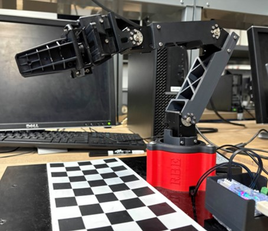

Projects
LTLx: Autonomous Task-Based Path-Planning in Unknown Environments
WPI Graduate Capstone Research: Masters in Robotics
August 2025 - December 2025
To finish my Masters degree, I chose to complete a research project aimed at displaying all the skills I've gained during my Masters work, as well as digging deeper into some of the topics that had interested me the most during my coursework. I chose to do this as part of the Automata Lab, advised by Professor Kevin Leahy. The lab focuses on applying cutting-edge planning techniques to real-world problems: in particular, I was interested in applying formal methods to path planning for robotics. I also wanted a project that would allow me to work in both simulated and real-world environments, exploring the challenges unique to each.
 I developed a project that aimed to utilize linear temporal logic (LTL) for guiding exploration and task completion in unknown environments, expanding on and modernizing a 2013 paper, "Temporal Logic Motion Planning in Unknown Environments." To do this, I developed a custom simulation environment and implemented a planning loop blending exploration with LTL-based task completion, with optimizations aimed at reducing memory complexity and increasing exploration efficiency. I evaluated this approach against a traditional baseline (complete enviroment mapping prior to task completion).
I developed a project that aimed to utilize linear temporal logic (LTL) for guiding exploration and task completion in unknown environments, expanding on and modernizing a 2013 paper, "Temporal Logic Motion Planning in Unknown Environments." To do this, I developed a custom simulation environment and implemented a planning loop blending exploration with LTL-based task completion, with optimizations aimed at reducing memory complexity and increasing exploration efficiency. I evaluated this approach against a traditional baseline (complete enviroment mapping prior to task completion).
Autonomous Vehicle for Ocean Pollution Cleanup
WPI Major Qualifying Project
August 2024 - May 2025
I worked alongside a 6-person team to develop an autonomous vehicle for collecting plastic waste from Earth's oceans. Our team designed, prototyped, and constructed a large vehicle modeled after catamarans, aimed at improving stability and controllability from previous iterations of this project. We then implemented and tested both teleoperative and autonomous navigation. Finally, we wrote an in-depth technical report outlining our project goals, design process, and recommendations for future work.
I led the implementation of our navigation code, and developed our computer vision system for real-time video-based object detection using the Ultralytics YOLO algorithm. I also developed much of our low-level motor control code and contributed significantly to the construction and maintenance of the physical robot's frame. Finally, I served as a lead technical writer and primary editor on our report, with a focus on the project background and software architecture sections.
See the full projectControl Barrier Functions for Manipulator Control
Spring 2025
I worked in a three-person team to implement control barrier functions (CBF) for safe control of a 4-DOF robotic manipulator. We used CBFs to prevent the arm from approaching joint-space singularities and unreachable joint positions, and tested our approach in both simulation and on a real-world arm. This is a fairly novel approach to manipulator control, and per our literature review, was one of (maybe the only) projects applying this form of control to a physical manipulator. We hope to extend this in the future to more complex arms and task-space obstacles.
See the full projectForaging with Swarm Robotics
Spring 2025
In distributed systems such as swarm robotics, limited-capability individual robots often need to perform independent tasks to gain shared rewards for the overall swarm. These agents typically have minimal access to global information and thus must allocate and perform tasks primarily based on local information, similar to how swarm-oriented animals such as ants operate. But without global information, agents must strike a balance between completing tasks and gathering or sharing information, two activities often at odds with each other. Therefore, our solution implements a controller that manages agent behavior during task progression, balancing expected rewards with the age of current information. We implemented three baseline algorithms and modified each to include our controller before evaluating each approach in regards to four key metrics. Our approach shows initial promise for information-aware swarm foraging, but further experimental development is needed.
See the full projectMachine Learning in Robotics
Spring 2025
I worked on a series of class projects, centered on applying modern machine learning approaches to robotics engineering scenarios. Project 1 served as an introduction to machine learning and core tools such as PyTorch. In this project, I used three different techniques (analytical linear regression, stochastic gradient descent, and a simple multi-layer perceptron) to estimat the pose of a six degree of freedom UR10 robotic manipulator, and then analyzed the merits of each of these methods. Project 2 extended this to a more complicated system, requiring a more complex neural network, to estimate the position of a small block after a given push was applied to it. In this project, a purely physics-based model was contrasted with a pure neural network-based approach and a hybrid model combining the physics-based and neural net approaches.
In project 3, we focused on reinforcement learning techniques, analyzing the comparative success of Asynchronous Advantage Actor-Critic (A3C) and Deep Deterministic Policy Gradient (DDPG) for training a simulated Kuka arm in a pick-and-place operation. During this project, we also got the opportunity to utilize the Turing high performance computing cluster at WPI, allowing us to access computational resources far beyond my personal machine's capabilities. Finally, during our self-designed final project, I developed a custom Gymnasium environment with simulated LiDAR-equipped differential drive robots and used DDPG to train these agents to navigate around both static and dynamic obstacles to a goal location.
Quadcopter Trajectory Tracking
Fall 2024
I developed both a PD and an LQR controller to implement trajectory tracking for a simulated quadcopter drone. This process started by developing a full kinematics and dynamics model of the quadcopter, necessary for implementing the PD controller for the thrust and orientation of the robot. The robot was assumed to stay at hover (with near-zero orientation) to simplify this model. After implementing and tuning the PD controller, I created a linear quadratic regression (LQR) controller, which is based in optimal control theory and aims to minimize a quadratic cost function to determine an ideal feedback controller.
To do this, I created a state-space model of the robot's dynamics and tuned the controller. Finally, I tested each controller on two trajectories, a diamond helix and circle, and compared their results and relative strengths.
Read more Check out my codeIndustrial Manipulator Exploration
Fall 2024
During a seven-week class, I explored two industrial manipulators and a variety of potential uses for these robots. The first arm was an ABB IRB1600 6-DOF serial manipulator with a spherical wrist; I used both a simulated robot, programmed in RobotStudio, and a physical arm to accomplish a series of tasks. I started with simple stacking operations programmed online by jogging the robot, and progressed to more complex tasks such as palletization programmed offline through the RobotStudio application. The second arm was a simulated ABB IRB360 delta manipulator, a special type of parallel manipulator with a fixed end-effector orientation. This arm was used to navigate simulated environments while avoiding obstacles.
Throughout the course of this project, I also explored the forward and inverse kinematics of a variety of different serial and parallel manipulators. I also examined the workspaces, possible singularities, manipulability, and relative strengths and weaknesses of these arms, giving me a strong understanding of how to implement these arms in an industrial setting.
See the arms in action7-DOF Robotic Manipulator Simulator
Spring 2024
I worked in a 4-person team to develop a MATLAB-based simulation of a PUMA 560 industrial manipulator. The Puma 560 manipulator is 6-DOF arm, giving us a realistic model of a common industrial manipulator. We used an URDF file as well as research papers using this arm to develop a kinematics and dynamics model of the arm in MATLAB. For movement calculations, we used the Product of Exponentials formula for forward kinematics and the Recursive Newton-Euler method for dynamics. This gave us fine control over the motion at each joint, as well as the torque required to safely move the arm under a load.
For our simulation, we used the MATLAB app designer to construct a simple control system. One window provided users the ability to enter desired end-effector position and orientation, as well as a simualated load representing an object held by the arm. A second window showed a real-time simulation of the arm, as well as plots showing joint states throughout motion. While simple, this simulation gave me a experience developing motion control for an industry-level manipulator while also serving as an introduction to useful tools such as the MATLAB app designer, URDF files, and Peter Corke's Robotics Toolbox.
Check out our codeAutonomous Maze Mapping and Traversal
Spring 2024
 Along with two teammates, I developed code to autonomously map an unknown maze environment before solving the "kidnapped robot problem" in that environment. We programmed a Turtlebot3 Burger running Python in ROS, allowing us to easily combine classes for different functionality into an efficient final software suite.
To this, we started with simple controls for a differential drive bot to allow for smooth high-speed motion, before building a navigation package built around a custom A* algorithm. This algorithm was modified to find paths with both minimal distance traveled as well as maximum distance from walls, for extra safety while moving.
I also implement a custom pure pursuit controller for motion, essentially smoothing out the robot's path by predicting the robot's future position and adjusting its trajectory accordingly, allowing us to move faster and with less turns than other project teams.
Along with two teammates, I developed code to autonomously map an unknown maze environment before solving the "kidnapped robot problem" in that environment. We programmed a Turtlebot3 Burger running Python in ROS, allowing us to easily combine classes for different functionality into an efficient final software suite.
To this, we started with simple controls for a differential drive bot to allow for smooth high-speed motion, before building a navigation package built around a custom A* algorithm. This algorithm was modified to find paths with both minimal distance traveled as well as maximum distance from walls, for extra safety while moving.
I also implement a custom pure pursuit controller for motion, essentially smoothing out the robot's path by predicting the robot's future position and adjusting its trajectory accordingly, allowing us to move faster and with less turns than other project teams.
We then implemented SLAM using the ROS gmapping package, allowing us to easily map the environment by calculating optimal centroids for exploration and navigating to them until all unknown areas were mapped. After mapping was complete, we used the AMCL package with custom parameters to perform localization after the robot was moved to an unknown location in the maze. Finally, we added a unique potential fields-based obstacle avoidance method to automatically detect and avoid both known and unknown obstacles during movement, allowing for avoidance of even dynamic obstacles in the workspace.
Read more Check out our code See if in actionArtificial Intelligence for Robotic Control
Winter 2024
 I worked in a team of three to develop control code for a robot navigating a complex
environment based on the arcade game "Bomberman." This involved the implementation and testing of various AI algorithms including Minimax,
Expectimax, and Approximate Q-Learning. We also developed a finite state machine framework, as well as a custom A* implementation, to assist in our character's navigation. This project spanned a variety of difficulty levels,
with project variants introducing additional obstacles and enemies into the game space, requiring us to optimize our code to succeed in these more difficult scenarios.
I worked in a team of three to develop control code for a robot navigating a complex
environment based on the arcade game "Bomberman." This involved the implementation and testing of various AI algorithms including Minimax,
Expectimax, and Approximate Q-Learning. We also developed a finite state machine framework, as well as a custom A* implementation, to assist in our character's navigation. This project spanned a variety of difficulty levels,
with project variants introducing additional obstacles and enemies into the game space, requiring us to optimize our code to succeed in these more difficult scenarios.
Brigham and Women's Hospital Staff Portal
Spring 2023
 For this project, I worked in a team of ten to create a desktop application for Mass General Brigham and Women's Hospital. Using Agile design methodologies to organize our work,
we implemented a variety of features including pathfinding, a map editor, component movement to allow for moving offices and departments, service request modules, hospital-wide announcements, and instant messaging.
This application was then presented to hospital representatives to provide them information and ideas about potential features and UI/UX designs for their internal system.
For this project, I worked in a team of ten to create a desktop application for Mass General Brigham and Women's Hospital. Using Agile design methodologies to organize our work,
we implemented a variety of features including pathfinding, a map editor, component movement to allow for moving offices and departments, service request modules, hospital-wide announcements, and instant messaging.
This application was then presented to hospital representatives to provide them information and ideas about potential features and UI/UX designs for their internal system.
Color-sorting Pick-and-Place Robot
Winter 2023
 Along with two other robotics students, I created a MATLAB library to control a 3-DOF robotics arm. Over the course of the project, we implemented forward and inverse kinematics using both position and velocity, and trajectory generation.
To assist with testing motion control, we also implemented a real-time virtual simulation of the end-effector's motion, with options to generate a variety of
graphs during movement.
Along with two other robotics students, I created a MATLAB library to control a 3-DOF robotics arm. Over the course of the project, we implemented forward and inverse kinematics using both position and velocity, and trajectory generation.
To assist with testing motion control, we also implemented a real-time virtual simulation of the end-effector's motion, with options to generate a variety of
graphs during movement.
For our final demonstration, we developed computer vision code to use a free-standing camera to detect a variety of colored balls, and sort them into different locations by color. Our robot would continue to run until all objects in the workspace had been correctly sorted, before returning to a standby position. After a successful demonstration of our base functionality, we added detection for additional colors as well as non-spherical objects.
Read More See it in actionMulti-robot Escape Room Navigation
Fall 2022
I worked on creating three Romi robots to solve an "Escape Room" maze. Each robot was designed to complete one component of the overall project: locating the escape door and activating the door key, locating and obtaining the door key, or opening and driving through the escape door. To do this, we used C++ code to implement a variety of sensors, as well as kinematics and PID control for motion. We developed control code that was also resilient to obstacles or unexpected changes in the environment, as our class was the first to complete this project. This resilience in our code helped ensure that all three robots could consistently complete their given tasks during final demonstrations.
Read More See it in actionAutonomous Panel Placement Robots
Fall 2022
I worked with a team to create two robots to autonomously collect and replace solar panels on a model house. Each robot had a unique four-bar linkage arm and gripper assembly, giving me experience with mechanical design and analysis. Both robots were required seperate analysis of force and control for the arm and gripper, but they both needed to be able to place collectors at two different angles on the house. To ensure that we could efficiently develop our control software and test both robots, I lead the implementation of a single state machine in C++ that would allow us to utilize identical code on both robots, with a remote control used to control which arm positions and gripper system to use for each run. This highlighted my ability to create creative and optimal software solutions and lead a development team.
See it in actionPlate Haven Application Case Study
Fall 2024
 I helped create a full development plan for a restaurant review application called Plate Haven as a case study in the entrepreneurial process. My team and I started by researching possible market opportunities, and exploring emerging technologies and market trends that
would enable viable startups in our researched markets. We settled on designing an application to help those with dietary restrictions (such as food allergies or religious diets) find restaurants whose menus and staffs could accommodate their needs. Over the course of the semester, we researched everything from marketing to patent law to value propositions. We then summarized our research and analysis in a final paper and presentation outlining our work and delivering a final evaluation on the financial viability of our fictional application.
I helped create a full development plan for a restaurant review application called Plate Haven as a case study in the entrepreneurial process. My team and I started by researching possible market opportunities, and exploring emerging technologies and market trends that
would enable viable startups in our researched markets. We settled on designing an application to help those with dietary restrictions (such as food allergies or religious diets) find restaurants whose menus and staffs could accommodate their needs. Over the course of the semester, we researched everything from marketing to patent law to value propositions. We then summarized our research and analysis in a final paper and presentation outlining our work and delivering a final evaluation on the financial viability of our fictional application.
Assessing the MMA Intern Program’s Impact on Science
Fall 2023
 I worked in a team of four to develop a database of former interns for the Maria Mitchell Association (MMA), a science education and reseach center in Nantucket, MA.
We used MMA archives and independent research to develop a list of former interns before distributing a survey to them regarding their accomplishments and career journey.
We also conducted interviews with select interns to gain a deeper understanding of their experiences at the MMA and beyond.
As deliverables, we created a final report of our research, and developed infographics to display the quantifiable impact of former MMA interns on the scientific community.
I worked in a team of four to develop a database of former interns for the Maria Mitchell Association (MMA), a science education and reseach center in Nantucket, MA.
We used MMA archives and independent research to develop a list of former interns before distributing a survey to them regarding their accomplishments and career journey.
We also conducted interviews with select interns to gain a deeper understanding of their experiences at the MMA and beyond.
As deliverables, we created a final report of our research, and developed infographics to display the quantifiable impact of former MMA interns on the scientific community.
Rho Beta Epsilon Leadership
Spring 2023 - Spring 2025
In 2024 I served as the president of Rho Beta Epsilon, a role I assumed after serving as treasurer in 2023. Rho Beta Epsilon is a robotics honors society founded at Worcester Polytechnic Institute, to support those robotics engineers who demonstrate both academic and personal excellence. As a society, we aim to both support our own members in pursuing personal projects and career goals, and support the robotics community as a whole at WPI. To do this, we host everything from career fairs, to workshops on key course topics such as Git and ROS, to fun finals week events providing food and entertainment during the most stressful times of the year for students.
While serving as President, I led two main initiatives. The first focused on reworking our application process. During the application process, we want to give prospective members the opportunity to show their engineering knowledge along their interpersonal skills, in a format that makes objective evaluation feasible. I was the primary creator of a new format for our interviews, modeling our questions after simulated student questions about core robotics topics. To do this, I wrote ~20 questions covering a variety of robotics concepts, each designed to show an applicant's engineering background alongside their ability to debug complex systems, provide clear explanations on the fly, and speak to younger engineers with care and kindness.
The second initiative I led was aimed at providing better channels for communication between the WPI robotics department and the student body. As students, we want our feedback on courses and professors to be heard and acted on, and we want changes to the department's goals and systems to be communicated clearly and quickly. To make this possible, I helped lead the creation of a new Student Advisory Board; this board would include students across all grade levels and academic outcomes (not just the highest achievers), and would represent the student body's interests during department meetings and discussion.
After graduating, I was elected as the chairman of the Rho Beta Epsilon National Board, a 5-person oversight board of RBE alumni who work to expand Rho Beta Epsilon to additional institutions across the country.
WPI Esports Lab
Fall 2022
 As part of the WPI Esports Club Executive Board, I helped design and implement the WPI Esports Lab and Gaming Lounge. These spaces provide students with opportunities to use
state-of-the-art gaming equipment and get involved with collegiate esports. As Treasurer of the Esports Club, I managed the purchasing of all items for these spaces, and organized
our final purchase report to the student government financial board for reimbursement approval. As current President, I help oversee the space, and I organize and run a variety of events
to engage the WPI community. I have also led the growth of the club's tournament offerings.
As part of the WPI Esports Club Executive Board, I helped design and implement the WPI Esports Lab and Gaming Lounge. These spaces provide students with opportunities to use
state-of-the-art gaming equipment and get involved with collegiate esports. As Treasurer of the Esports Club, I managed the purchasing of all items for these spaces, and organized
our final purchase report to the student government financial board for reimbursement approval. As current President, I help oversee the space, and I organize and run a variety of events
to engage the WPI community. I have also led the growth of the club's tournament offerings.